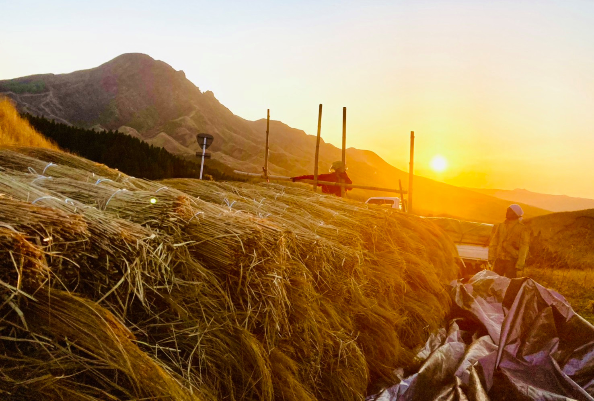
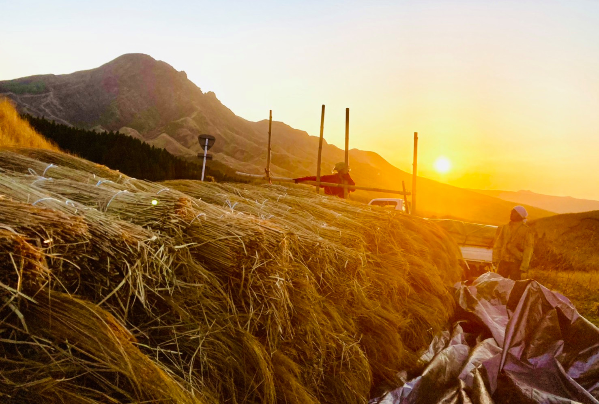
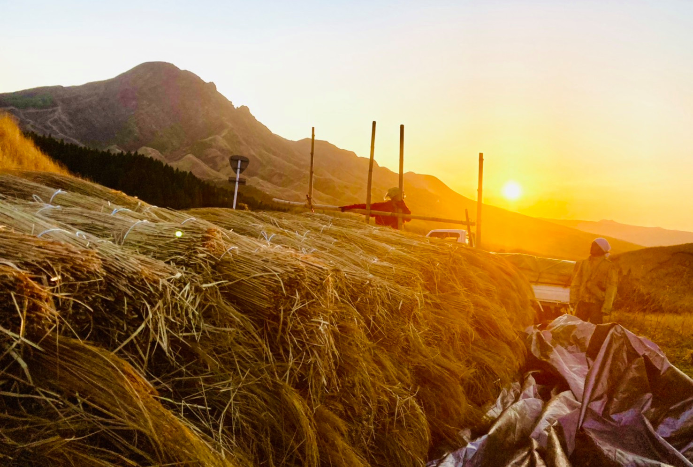
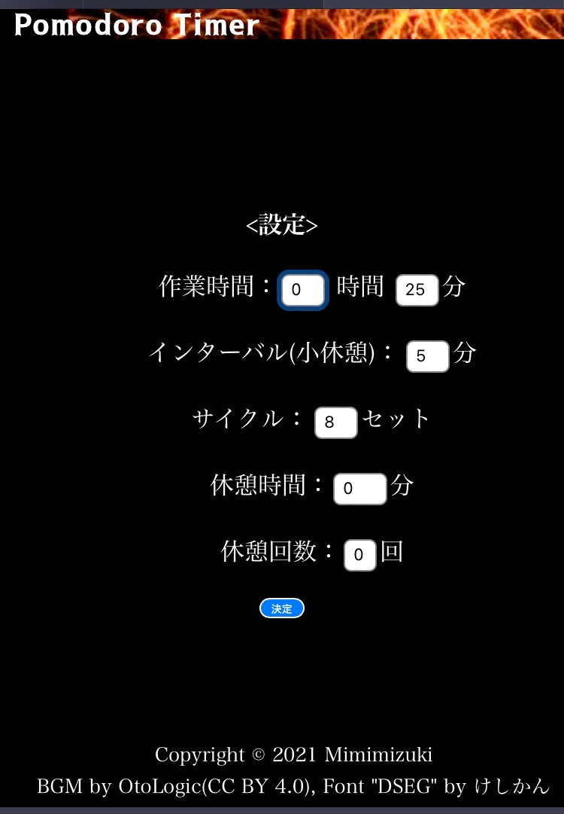
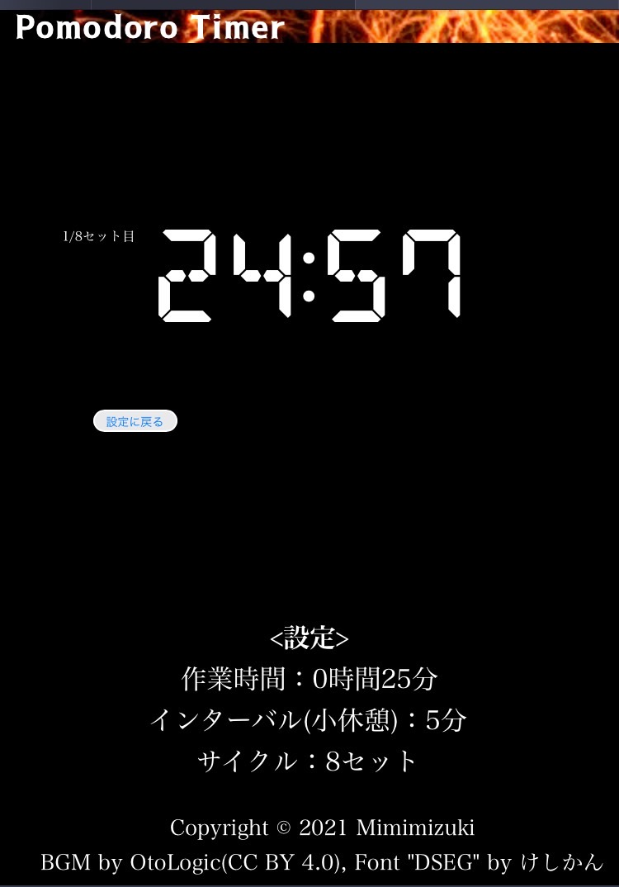
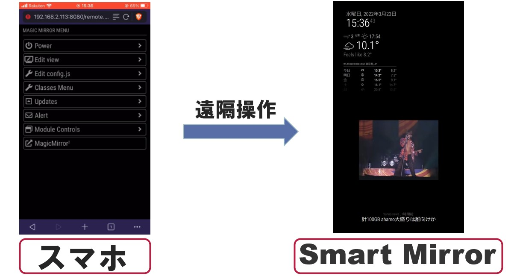
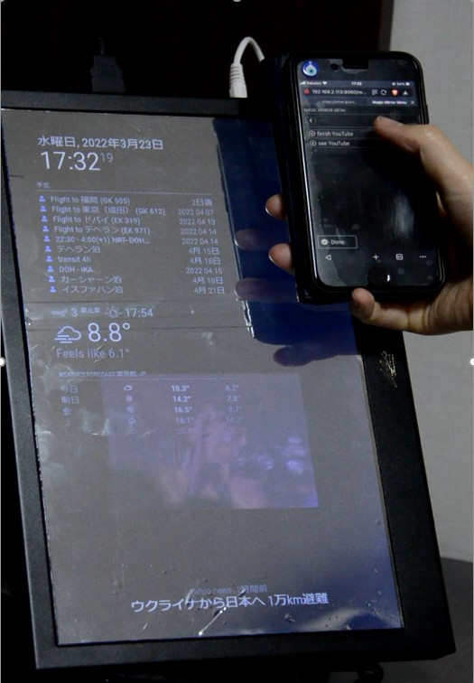

LEARNING
現在は主に以下の2つのことに力を入れて学習を行っている。
～茅～
一つ目は卒業論文のテーマである「茅」に関する研究・調査である。
私は現在大学のゼミで「茅産業のこれまでとこれからの動向」に関する研究を行っている。
茅とはススキなどを総称した屋根材で、世界遺産である白川郷の合掌造りなどに利用されている。 近年の日本の茅産業は後継者不足や茅を用いた生活が現代の生活に即していないことに伴い、 衰退が懸念されている。一方でデンマークやスウェーデン、ドイツなどでは茅がエコロジカルな材料であることや、 茅葺屋根のデザイン性、耐久性、市場価値などから注目を集めている。
私は熊本県阿蘇市で約5か月間に渡り、この茅を刈るアルバイトをしてきた。 山を駆け回って鎌でススキを刈り、束ね、運ぶを繰り返すのだ。 そんな中で茅の持つ魅力や可能性を感じ、また一方で衰退しつつある産業であることも再認識し、卒業論文のテーマとするに至った。 実際に茅を刈った経験やそこでできた人脈を活かし茅産業に携わる方々にインタビューを行うことで、 机上論ではなく実地で役立つ論文となることを目指している。
論文の内容としては、日本でこれまでどのような形で茅を中心とした生活や循環、コミュニティが存在していたのかを 地域ごとに比較し、その歴史やフィールドワークなどを踏まえ、 将来どのような形で茅産業を存続することが望ましいかの考察を行っている。 同時に歴史を遺すことの意味とは、文化とはそもそも何なのかなど茅を通してより抽象的な概念に対する意義の考察も行っている。

 


-経験
2021.07~2021.12 ハーバード大学提供CS50x履修、終了証取得（2021.12）
C言語、Python、HTML、CSS、JavaScriptなどを使用し
コンピューターサイエンスとプログラミングの基礎を学習。
2021.12~2022.01 42Tokyoの入学テストを受験。
1か月に渡るテストの中で、コードを書くことに加え、
お互いに教えあうピアラーニングの楽しさを学ぶ。
2022.02~2022.03 東京大学産学協創推進本部主催、100Program参加
ものづくりプロジェクトでRaspberrypiを用いたスマートミラーを開発。
2022.04~ 42Tokyo在籍
エンジニア養成機関42TokyoにてC言語を中心に学習を行っている。
-作品
・ポモドーロタイマー
CS50xの最終課題にて制作（2021）
作業開始時と休憩開始時を音で知らせてくれるwebアプリケーション。 作業時間や休憩時間、サイクルなどを変更することが可能。
100Programでのチーム開発にて制作(2022)
鏡とコンピュータ、両方の機能をあわせもったデバイス。 基本的には手で操作することなく画面が切り替わる。 スマホで遠隔操作することも可能。 （ソースコードはOSSを使用）
茅とはススキなどを総称した屋根材で、世界遺産である白川郷の合掌造りなどに利用されている。 近年の日本の茅産業は後継者不足や茅を用いた生活が現代の生活に即していないことに伴い、 衰退が懸念されている。一方でデンマークやスウェーデン、ドイツなどでは茅がエコロジカルな材料であることや、 茅葺屋根のデザイン性、耐久性、市場価値などから注目を集めている。
私は熊本県阿蘇市で約5か月間に渡り、この茅を刈るアルバイトをしてきた。 山を駆け回って鎌でススキを刈り、束ね、運ぶを繰り返すのだ。 そんな中で茅の持つ魅力や可能性を感じ、また一方で衰退しつつある産業であることも再認識し、卒業論文のテーマとするに至った。 実際に茅を刈った経験やそこでできた人脈を活かし茅産業に携わる方々にインタビューを行うことで、 机上論ではなく実地で役立つ論文となることを目指している。
論文の内容としては、日本でこれまでどのような形で茅を中心とした生活や循環、コミュニティが存在していたのかを 地域ごとに比較し、その歴史やフィールドワークなどを踏まえ、 将来どのような形で茅産業を存続することが望ましいかの考察を行っている。 同時に歴史を遺すことの意味とは、文化とはそもそも何なのかなど茅を通してより抽象的な概念に対する意義の考察も行っている。

top
～プログラミング～
二つ目はプログラミングの学習である。
学習期間は約1年で、現在は42Tokyoというエンジニア養成機関に通い、
C言語を中心に学習を進めている。-経験
2021.07~2021.12 ハーバード大学提供CS50x履修、終了証取得（2021.12）
C言語、Python、HTML、CSS、JavaScriptなどを使用し
コンピューターサイエンスとプログラミングの基礎を学習。
2021.12~2022.01 42Tokyoの入学テストを受験。
1か月に渡るテストの中で、コードを書くことに加え、
お互いに教えあうピアラーニングの楽しさを学ぶ。
2022.02~2022.03 東京大学産学協創推進本部主催、100Program参加
ものづくりプロジェクトでRaspberrypiを用いたスマートミラーを開発。
2022.04~ 42Tokyo在籍
エンジニア養成機関42TokyoにてC言語を中心に学習を行っている。
-作品
・ポモドーロタイマー
CS50xの最終課題にて制作（2021）
作業開始時と休憩開始時を音で知らせてくれるwebアプリケーション。 作業時間や休憩時間、サイクルなどを変更することが可能。


・スマートミラー100Programでのチーム開発にて制作(2022)
鏡とコンピュータ、両方の機能をあわせもったデバイス。 基本的には手で操作することなく画面が切り替わる。 スマホで遠隔操作することも可能。 （ソースコードはOSSを使用）


top